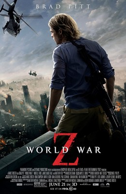

My Top 10 Favorite Movies
3 Idiots

The movie follows their travels to find their long lost friend, while flashing back to the events of their school years, where they often got into amusing shenanigans involving the Dean of Delhi's Imperial College of Engineering, Viru Sahastrabudhe, and dealt with some serious events that many people encounter in every day life.
12 Strong
12 Strong tells the story of the first Special Forces team deployed to Afghanistan after 9/11; under the leadership of a new captain, the team must work with an Afghan warlord to take down the Taliban. The True Story of the Army's Special Forces "Green Berets", who within weeks responded to the 9-11 attack.
Furious 7

In the film, Dominic Toretto, Brian O'Conner, and the rest of their team have returned to the United States to live normal lives after securing amnesty for their past crimes, until Deckard Shaw, a rogue special forces assassin seeking to avenge his comatose younger brother, puts the team in danger once again.
Captain Phillips
Captain Phillips is a multi-layered examination of the 2009 hijacking of the U.S. container ship Maersk Alabama by a crew of Somali pirates. It is - through director Paul Greengrass's distinctive lens - simultaneously a pulse-pounding thriller, and a complex portrait of the myriad effects of globalization.
Coach Carter
In 1999, Ken Carter accepts the job of basketball coach for his old high school in a poor area of Richmond, CA. As much dismayed by the poor attitudes of his players as well as their dismal play performance, Carter sets about to change both.
Home Alone
Home Alone is the story of 8-year-old Kevin (Macaulay Culkin), a mischievous middle child who feels largely ignored by his large extended family. While preparing for a Christmas vacation in Paris, Kevin gets in trouble, is banished to the attic overnight, and wishes his family would just disappear.
Olympus Has Fallen
Secret Service agent Mike Banning finds himself trapped inside the White House in the wake of a terrorist attack and works with national security to rescue the President from his kidnappers.
Space Jam
The film is a fictionalized account of the timeline between Jordan's initial retirement from the NBA in 1993 and his 1995 return, during which he is enlisted by the Looney Tunes characters to aid them in a basketball match against visiting aliens who intend to enslave them as attractions for their amusement park.
World War Z
Former United Nations employee Gerry Lane traverses the world in a race against time to stop a zombie pandemic that is toppling armies and governments and threatens to destroy humanity itself. Life for former United Nations investigator Gerry Lane and his family seems content.
Jungle Cruise

It tells the alternate history of the captain of a small riverboat who takes a scientist and her brother through a jungle in search of the Tree of Life while competing against a German expedition and cursed conquistadors.